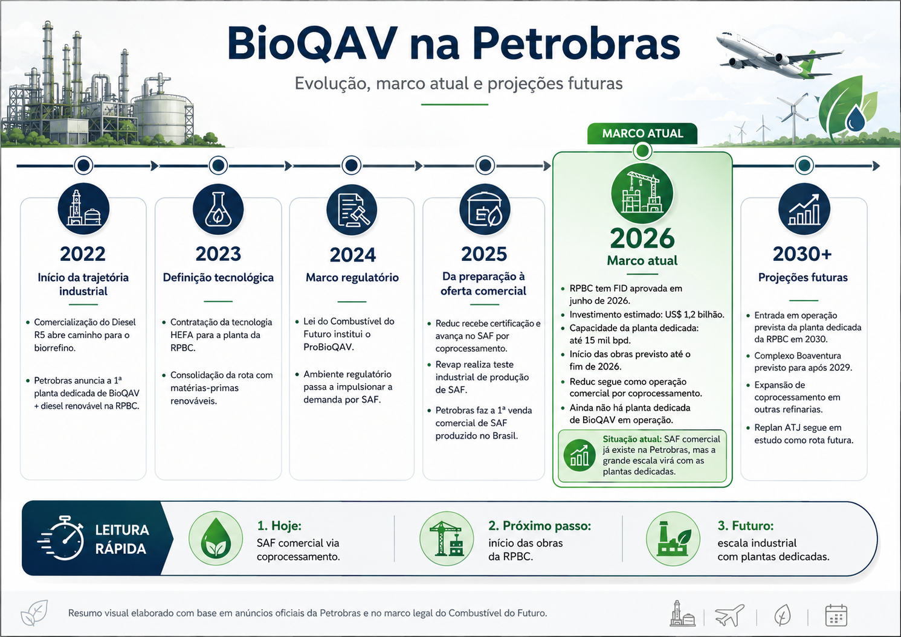

2022
Início da trajetória
industrial
- Comercialização do Diesel R5 abre caminho para o biorrefino.
- Petrobras anuncia a 1ª planta dedicada de BioQAV + diesel renovável na RPBC.
Evolução, marco atual e projeções futuras

Comparação com a referência — pressione R para ocultar